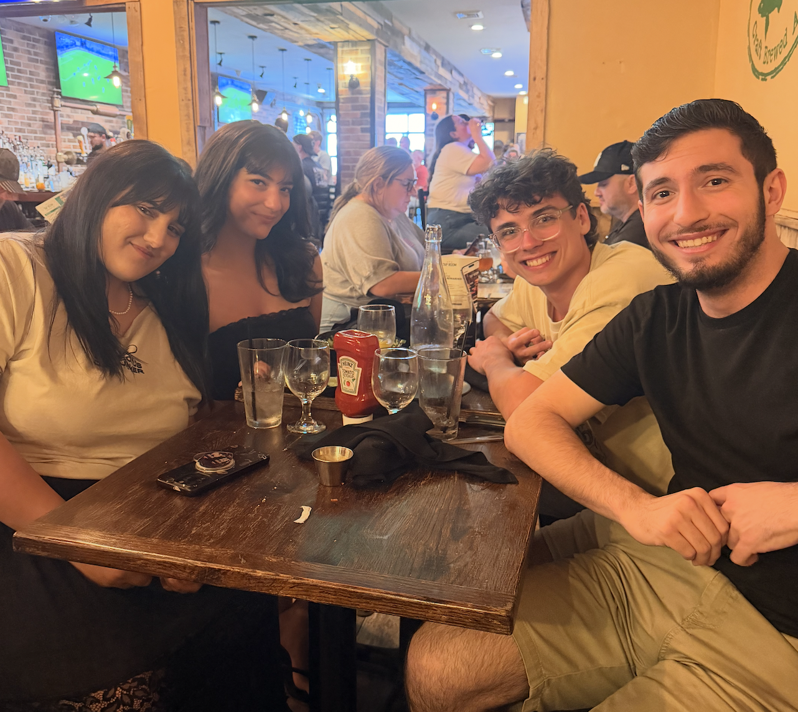
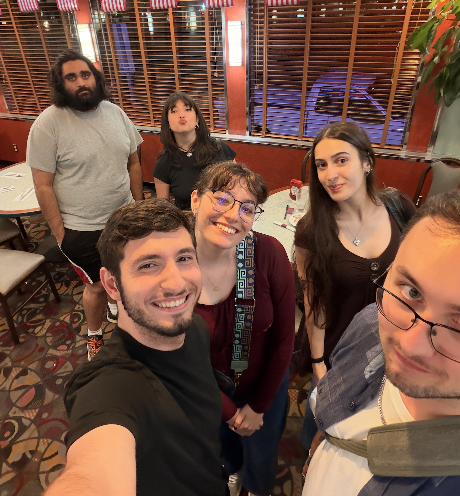
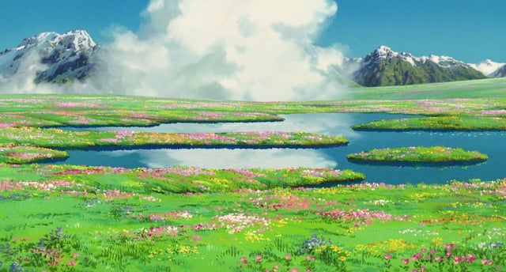
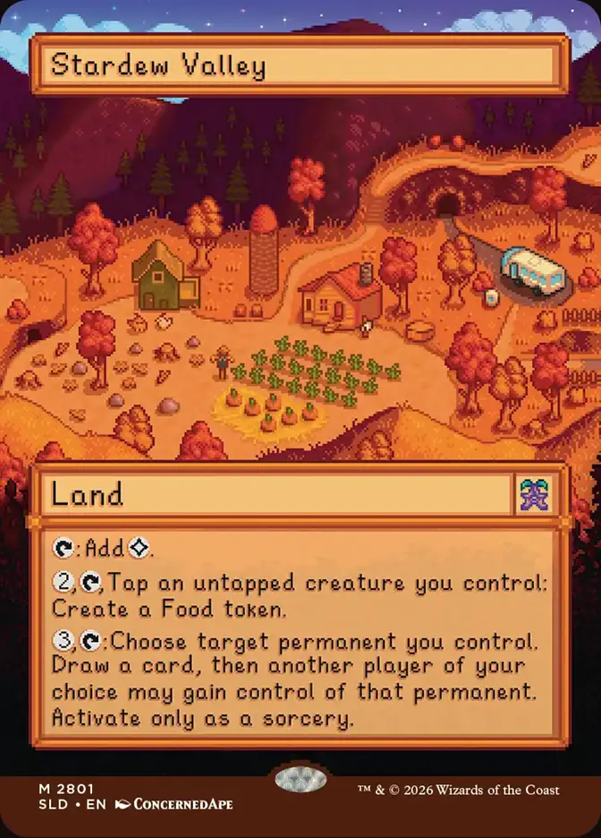
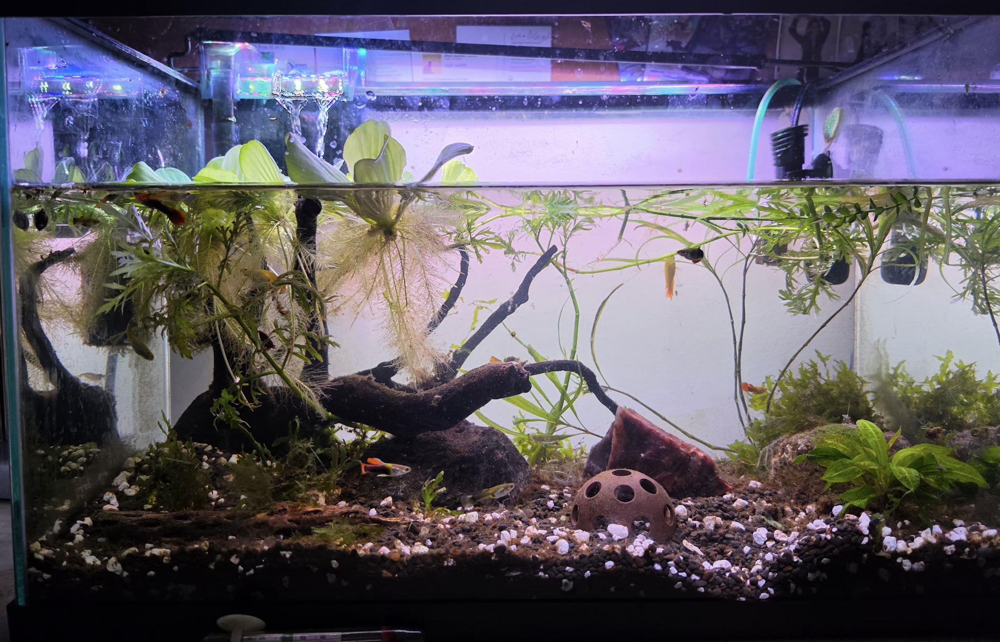
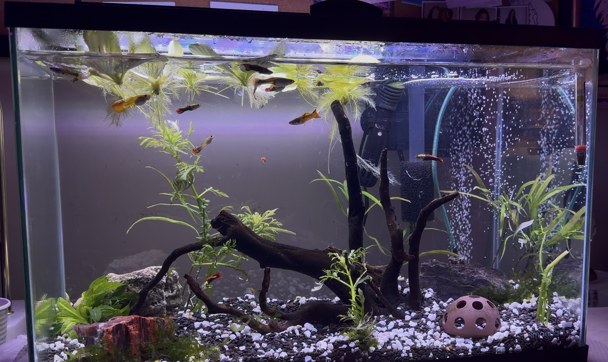

I’m alive
I’m alive, Dearest Readers! Here’s what I’ve been up to (this one’s going to be a long one, strap in)…
Where the hell have you been?!
God, I think the better question is where HAVEN'T I been? First of all, work has ramped up quite a lot. The company I work for is doing stuff, and I’m a part of a lot of that stuff. I talk about work enough outside of this blog, and so I kinda don’t want to here. It’s good, but it’s also a lot.


Outside of that, I’ve been spending time with my friends, family, and wonderful girlfriend. I’ve been doing photoshoots, seeing movies with my grandma, aging (I’m 23 now!), and overall taking some time to just enjoy life the way that I want to enjoy it. I’ve been doing a lot of self-reflection (and therapy) lately, and one of the biggest morals of the story has been that this life is mine, so I have to take it by the horns and kinda embrace the sole opinion of importance in how I live it, which is my own.
On that note, I’ve said it once and I’ll say it again: therapy is important and awesome.
Music!

You may notice that I haven’t posted in a while. I’ve been out doing a metric ton of stuff, and I’m excited to tell you all about it. First and foremost: My debut album turns FIVE in less than a month. That’s why I’m announcing 521’s Digital Deluxe Edition RIGHT NOW! Album cover and tracklist to be announced, so stay tuned!
I will say right now that this album will contain the 10 original tracks of 521, in addition to some new never-heard-before songs such as ’Back in the Day,’ ‘I’m Not Funny,’ and ‘Rose-Flavored Tea.’ They’re songs I wrote in the Post-521/Valerie era, and while I don’t feel they entirely represent the state of my artistry, I still want to give them a home, and what better place than an album celebrating that exact period of songwriting?
There’ll likely also be modern re-recordings of some of my personal favorites off the album, namely ’Lose Your Mind’ and ‘Without You’ to name two. A lot has changed about my sound despite the instrumentation being similar over these five years, and I want to showcase what those songs would sound like if I’d written them today.
Huzzah to that! More details soon.
Soon
Here’s one last thing about what I’ve been doing in the music world: learning how to play and record/mic drums! I can already keep a rhythm just by nature of being a musician, and I know what I want drums to do most of the time, and I’ve decided to glob a bunch of time into figuring out how to get my hands and feet to do what my brain wants them to. It’s a cool thing, and the better it starts to sound the more excited I get. I think my Kiss and Tell Show pt.2 is going to feature some of my first-ever drummed tracks! Hype as HELL for that!
On that note, I’m working on the Part 2 of The Kiss and Tell Show, right now codenamed The Illusion of Choice. I don’t think I’ll actually end up going with that, but something about that damn picture with the cow and both doors leading to the slaughterhouse has my brain hooked. I probably won’t end up going with that. I have a few ideas I’m playing with. Here are some tracks you can likely expect on that:
- Broken Up
- Suitcase
- Anyhow…
- Build a Problem (maybe) feat. my sister Eva (probably)
- Swim Around (this one is so effing cool imo)
Here’s a musical gift from me to you to listen to: a cover of Insurance by Rehash I used to practice my drumming!
Media

I’m still playing Stardew, caught up on The Pitt, and watched Generation Kill with Tash(holy peak). They were all fantastic. I also watched a few movies, Scott Pilgrim Vs. The World was awesome, REWATCHED Kiki’s Delivery Service, and continued my Studio Ghibli binge with My Neighbor Totoro, which was adorable. My girlfriend and I are preparing to see Studio Ghibli in CONCERT soon which rocks, I think hearing those orchestrals live is going to make me tear up, I’m not gonna lie.
Next up is Band of Brothers, and maybe Daisy Jones & the Six if my sister’ll watch it with me! I’m going to be on a plane for a little while soon too, so I’m gonna try to make a good sized dent in Dune (I’ve been trying to get to reading it!)
Hobbies!

I just got some of the Stardew Valley Magic: The Gathering secret lair (don’t kill me for engaging in capitalism, I’m sorry!!!) I love that arcane signet, and I’m totally going to build a politics deck with some of those group cards. I got the Welcome to Stardew Valley (foil because that’s all they had left), A Flicker in The Deep, and life in Pelican Town!
I made this budget edh deck that I might make in real life soon for giggles, I’ll let y’all know how it plays if I actually pull the trigger on buying the cards!
I don’t know if I’ve ever done a proper GUPDATE on here, but here goes! For the uninitiated (i.e. most), I keep a 10 gallon fish tank with guppies and shrimp! There was also a snail affectionately called Turbo, more on that in a second.

My snail decided to finally die and ammonia bomb my tank, killing almost all of my shrimp. This MCE sucked. It also made me decide it was time to clean and re-scape a little bit. The image above is the before (with some water drained), the image below is the after!

That’s what I’ve been engaging with mainly! I’ve been playing the release of BO2 as well on PS5. There’s something about ripping Zombies like it’s 2012 that’s hitting different in these recent days.
All things considered, I’m good!
And I hope it continues to go that way. Thanks for reading what turned out to be a lengthy blog post. I hope everyone reading is doing well, and I’ll update again soon!
~Luca